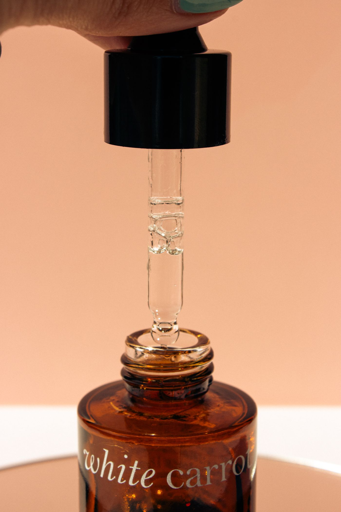

De kunst van minder.
Je routine mag ook eenvoudig zijn.
Een vertrouwd ritueel begint met aandacht. Kijk wat prettig voelt voor jouw huid en geef je routine de tijd.

Laat de haast even buiten.
Een paar minuten bij de wastafel. Een rustig begin, of juist een zachte afsluiting van je dag.